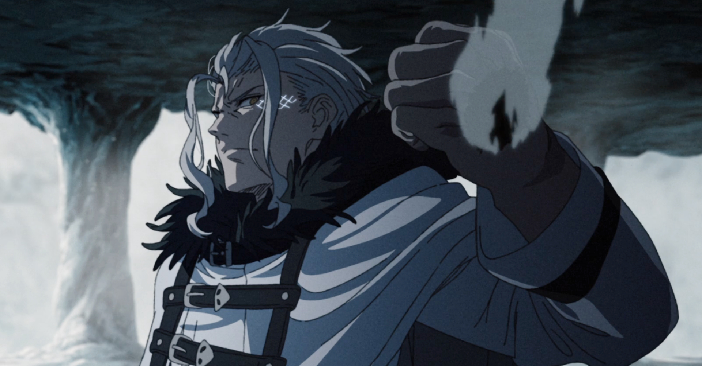

O criador dos 7 poderes na verdade nao foi ninguem tao imporante como as pessoas podem sugerir, o criador foi nada mais nada menos que um suposto random. Isso mesmo um completo random. Os 7 poderes sao relativamente conhecidos e "temidos" mas eles nao são unilateráis e tão influentes como é de se imaginar (ja que eles sao as pessoas mais fortes de Mushoku Tensei) Mesmo sendo tão poderesos eles nao exercem influencia em naçoes grandes/medianas, e isso foi descoberto de uma maneira não tao agradavel pelo Rudeos(protagonista)
Hoje no universo de Mushoku eles tao em 7
Deus do Norte:Aleksander Ryback(KALMAN III)
Deus da Espada:Gall Farion
Deus da Morte:Randolph Marianne
Deus Demoniaco:Laplace(parte má e louca)
Deus Lutador:Bagadi
Deus Dragão:Orsted
Deus da Tecnica:Laplace(parte boa e calma)
Vcs devem estar me pergutando do pq ele está em duas colocaçoes diferentes nos 7 poderes, isso acontece pq o Laplace original foi dividido em duas partes (parte boa e calma) essa parte extraiu somente a parte boa de Laplace.
Tambem temos a parte Má e louca de Laplace, essa parte extraiu todas as impurezas de laplace
Mais conhecido como Orsted, o Deus Dragão é uma calamidade,o ser mais poderoso do universo de Mushoku Tensei, mas ele sofre de uma sevéra maldição que toda vez que ele morte ou falha no seu plano ele volta no passado e é obrigado a viver tudo de novo, ate algum dia finalmente dar certo.
